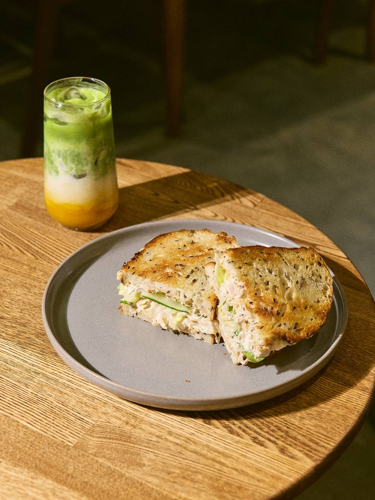
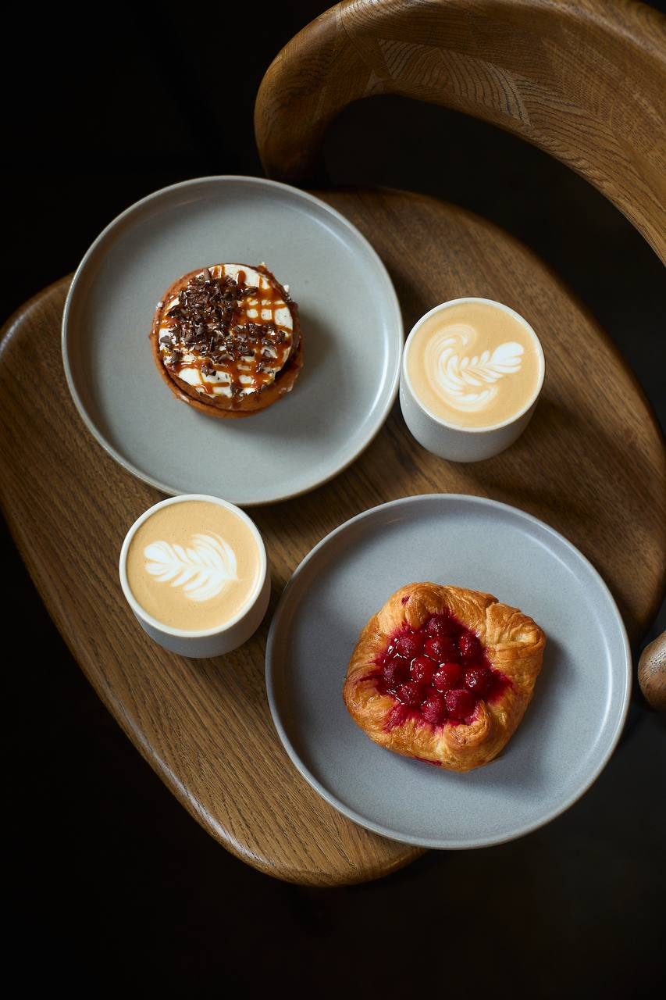
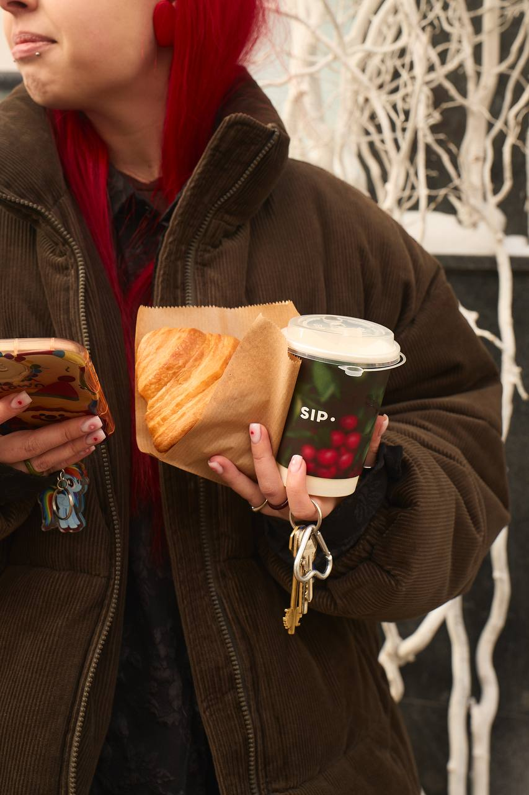
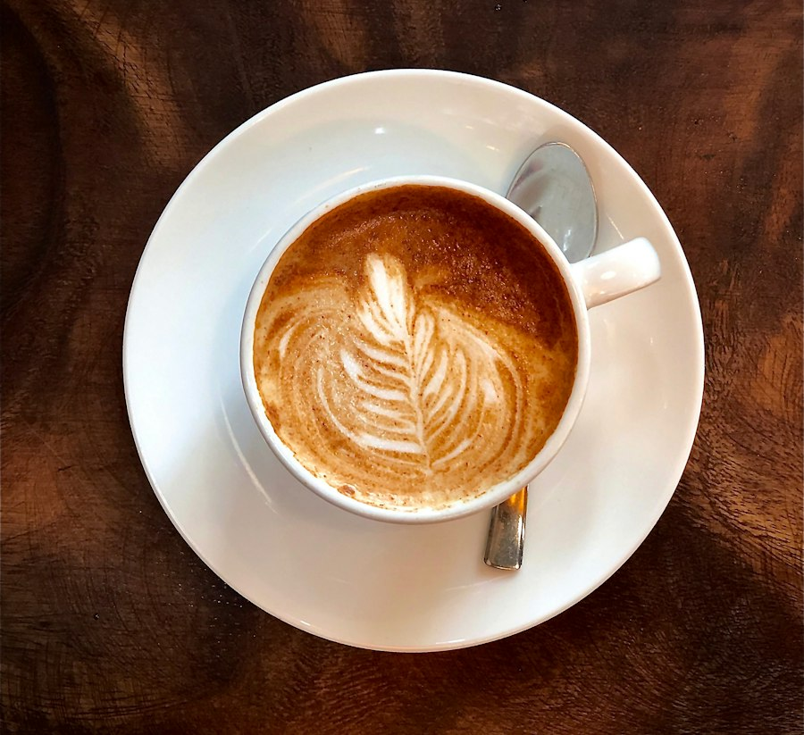
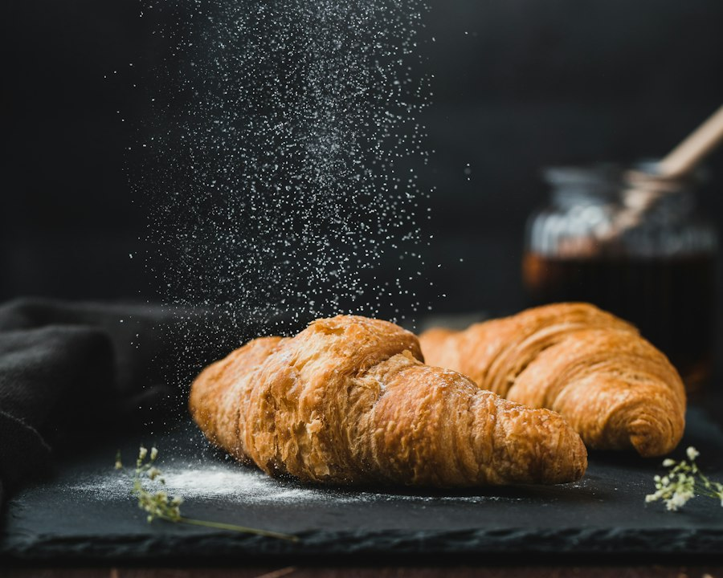
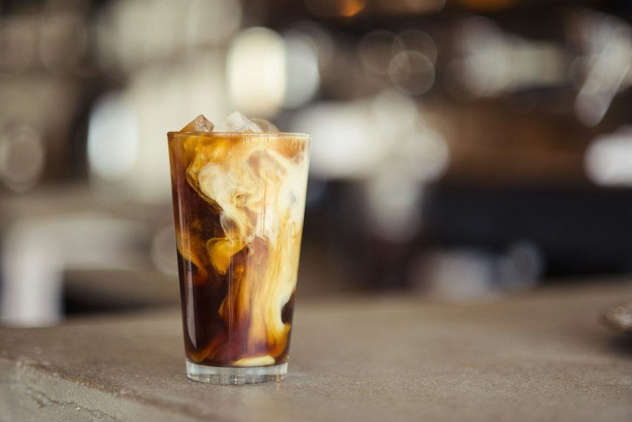

Зерно и бар
Эспрессо, воронка и аэропресс. Классику на молоке собираем плотной и ровной, авторские напитки — по сезону: пряные рафы, матча, бамбл.
Спешелти-кофейня в Газетном переулке: свежая обжарка, завтраки весь день и спокойный зал со светлым кирпичом и деревом. Сюда приходят за фильтром, сырниками и тишиной в центре Москвы.
Мы открыли SIP, чтобы в двух шагах от Тверской можно было сесть не «на бегу», а за нормальной чашкой. Зерно выбираем по сезону, обжарку держим свежей, а молоко и альтернативы настраиваем под напиток, а не под шаблон.
Кухня работает весь день: сырники, круассаны с витрины, сэндвичи и горячие завтраки. После 19:00 на кухню и выпечку действует скидка 20% — удобно зайти после работы и не торопиться.
Газетный переулок, 3 · рейтинг 5.0



Три вещи, из которых собран каждый день в SIP
Эспрессо, воронка и аэропресс. Классику на молоке собираем плотной и ровной, авторские напитки — по сезону: пряные рафы, матча, бамбл.
Завтраки не заканчиваются в полдень. Сырники, тосты на бриоши, круассаны и сэндвичи с витрины можно взять в любое время работы.
Светлый кирпич, дерево и немного столов. Можно работать с ноутбуком, встретиться и прийти с собакой: для хвостов всегда есть миска с водой.



Тем, кто узнаёт кофе по вкусу, а не по размеру стакана. Тем, кому нужен спокойный стол в центре между встречами. И тем, кто заходит за сырниками в четыре часа дня и не хочет слышать, что завтраки уже кончились.
Заказ можно собрать заранее на сайте: выбрать размер, молоко и сироп, забрать самовывозом или оформить доставку. Если удобнее зайти самим — мы на Газетном, 3, в двух минутах от метро.